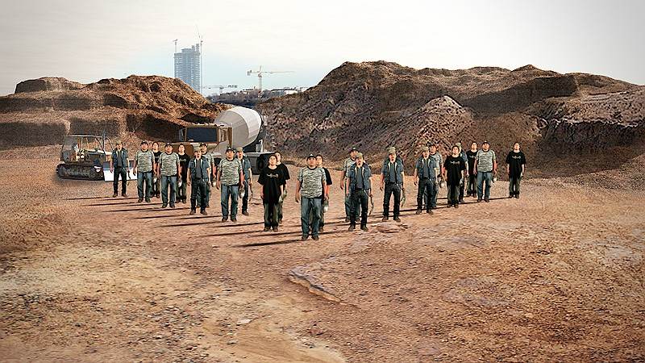
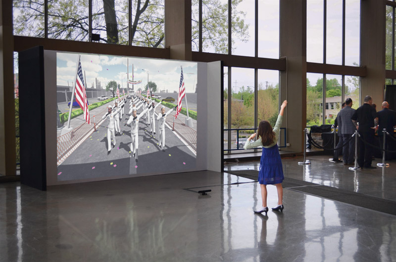
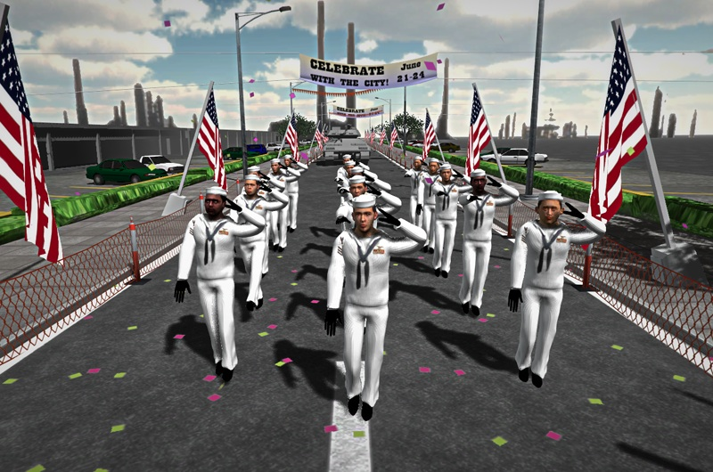

Così fan tutte
Video design for Portland Opera's production of Così fan tutte. Full stage video backdrop.
Body Landscapes
A series of 4 live generated video sequences.
Leda and the Swan
Fully interactive video interpretation of the classic "Leda and the Swan" story. Patient viewers will discover that faster, more violent movements will cause the feathers to fall off to reveal the figure of a woman (Leda). If the participant then returns to slower movements Leda will once again grow new feathers and transform back into the swan.
Black Friday: Parking Lot Dance II
Video commission for the Conduit Dance+ Festival in Portland Oregon.
Parking Lot Dance
Parking Lot Dance is a 4 minute, panoramic, 4-channel video loop. Filling a strip mall parking lot, thousands of duplicated dancers march, shoot guns, wave flags and writhe to a dark marching beat.
Untitled Dance with a New Pair of Legs
A proof of concept dance sequence to see if I could give myself a new pair of legs using Kinect and Maya.
Construction Site
Construction Site is a single-channel video loop generated from live video and 3D image renders. Footage of hired day laborers was pieced together and programmatically choreographed within a digitally modeled construction site.
Sailor Mirror
Installation at the CAP Art Auction. Interactive single-channel video depicting a group of digitally animated 3D sailors. The sailors mimic the upper body movements of viewers as they parade through an infinite strip mall. Tools: Unity and Kinect.
 How to Immigrate to the United States of America
A Sense of Place
As someone who grew up on and amongst mountains, rivers, and lakes, I use these geographic features as a frame of reference. A snowy peak on the horizon grounds me physically and mentally. I sleep soundly near the rush and hush of a river. A Sense of Place engages with a specific place, the lake district of Southern Chile, to create a surreal sequence of new and remixed landscapes.